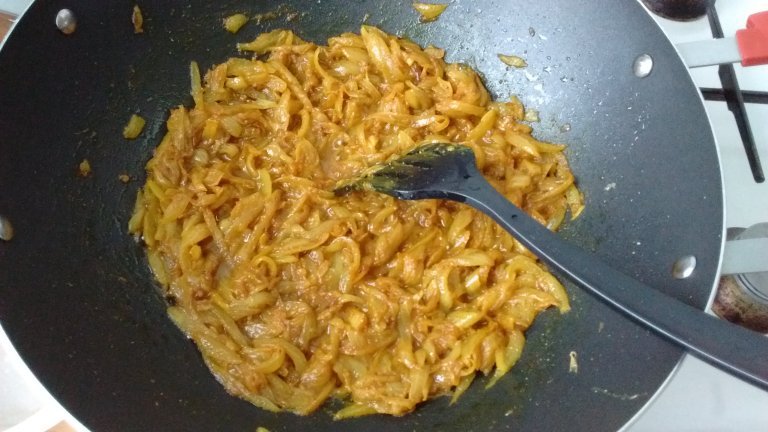
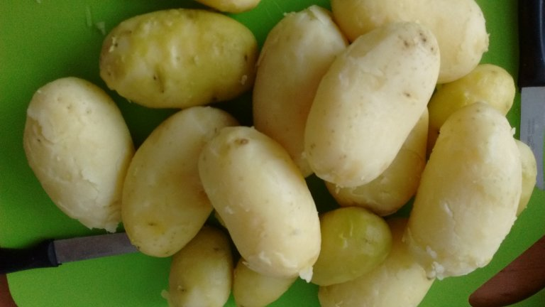

شیرازیها به طور خاص و اکثریت مردم فارس به طور عام به سیبزمینی میگویند آلو. به آلو میگویند آلوزرد یا آلوی طلایی یا آلوی سیاه که توصیف دقیقتری است. شاید باید مینوشتم مردم ایران به اشتباه به آلو میگویند سیبزمینی که خودش ترجمه مستقیم aardappel هلندی است. آلو یا همان سیب زمینی به روایت ویکیپدیا چهار قرن پیش از زادگاهش، رشته کوههای آند بردهاند به اقصی نقاط جهان و الان بعد از ذرت و گندم و برنج چهارمین محصول کشتگاههای دنیاست. در فارس از آلو غذایی میسازند با بوی پیازداغ و طعم بهشت. هفت هشت پیاز را به آقای خانه میدهید تا پوست بکند و ظریف خلال کند. اگر دلش خواست نم اشکی هم بریزد. پیاز را در کمی روغن تفت بدهید. دوپیازه غذای اعیان و اشراف نیست و ادویهاش زردچوبه فراوان است و نمک و اشک شوهر. ولی اگر دلتان خواست کمی هم زعفران و فلفل قرمز اضافه کنید به پیازها که الان خوب آب انداخته.

چهارده پانزدهتا سیب زمینی متوسط را که خوب شسته و نرم آبپز کردهاید، پوست بکنید و برش بزنید به تکههای کوچک. چند تکه آلو را نمک بزنید و توی بشقاب ببرید برای دختر.

آلوی خرد شده را بریزید داخل پیاز داغ و خوب روی شعله به هم بزنید. غذای اشراف نیست ولی اگر بود چند قاشق روغن زیتون بریزید تا خوب چرب شود. روایت داریم که یک دهانپر (همان mouthful خارجیها) باید بینیاز به جویدن از گلو سر بخورد پایین و تالاپ بیفتد توی معده.

دوپیازه بیاشک شوهر مزه ندارد. با پیازداغ آماده نپزیدش.